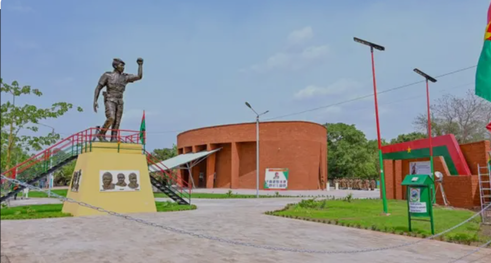
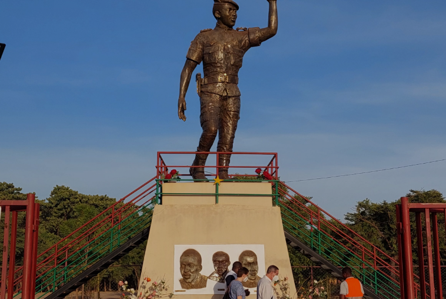
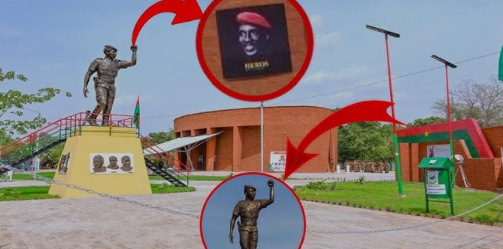
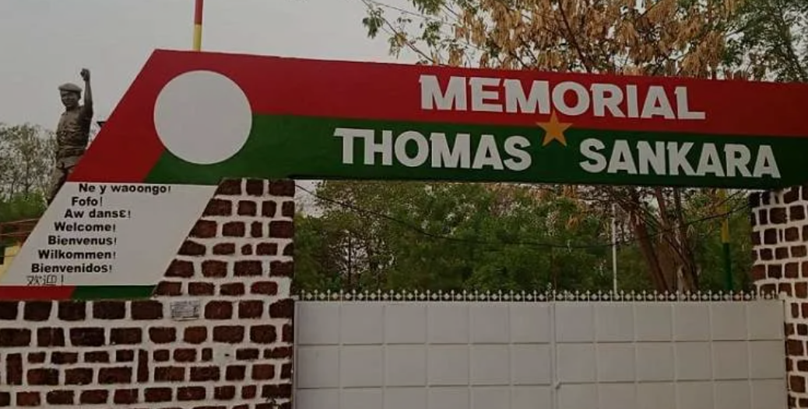

Mémorial Thomas Sankara

Présentation
Le Mémorial Thomas Sankara rend hommage au président révolutionnaire Thomas Sankara, figure emblématique du Burkina Faso et de l'Afrique. Connu sous le nom de "Che Guevara africain", Sankara a dirigé le pays de 1983 à 1987 sous le nom de Haute-Volta, qu'il rebaptisa Burkina Faso, signifiant "Pays des hommes intègres".
Ce mémorial est un lieu de pèlerinage pour de nombreux Africains et militants du monde entier qui voient en Thomas Sankara un symbole de la lutte pour la justice sociale, l'indépendance économique et la dignité des peuples africains.
Histoire
Thomas Sankara est arrivé au pouvoir le 4 août 1983 à la suite d'un coup d'État. Durant ses quatre années de pouvoir, il a mené une politique révolutionnaire axée sur l'autosuffisance alimentaire, l'éducation pour tous, l'émancipation des femmes et la lutte contre la corruption.
Il a été assassiné le 15 octobre 1987 lors d'un coup d'État. Depuis lors, sa mémoire n'a cessé de grandir au Burkina Faso et dans toute l'Afrique. Des générations entières se réclament de son héritage politique et moral.
Activités proposées
- Visites du mémorial
- Cérémonies commémoratives (15 octobre)
- Expositions sur la vie et l'œuvre de Sankara
Informations pratiques
📍 Adresse : Ouagadougou
🕐 Horaires : Tous les jours, de 8h à 18h
💰 Tarif : Gratuit
📅 Année : 2026
📸 Galerie photos


